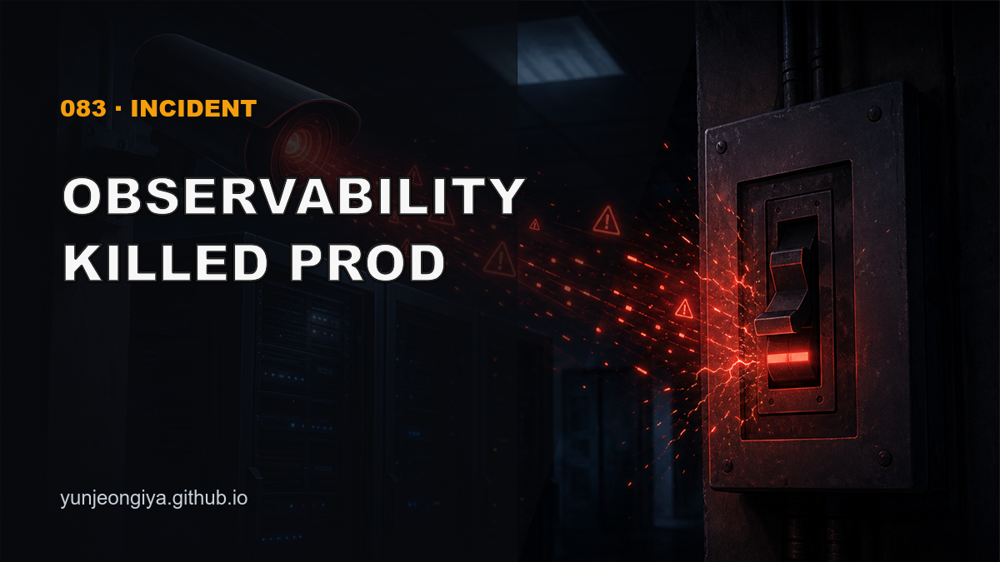
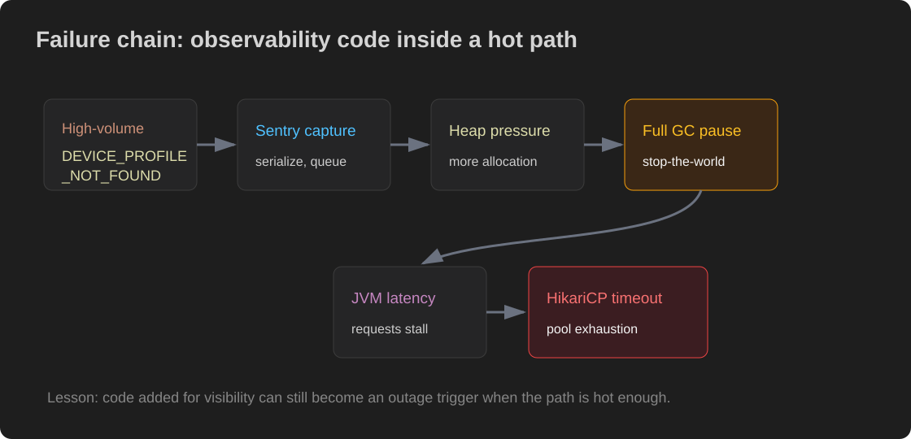
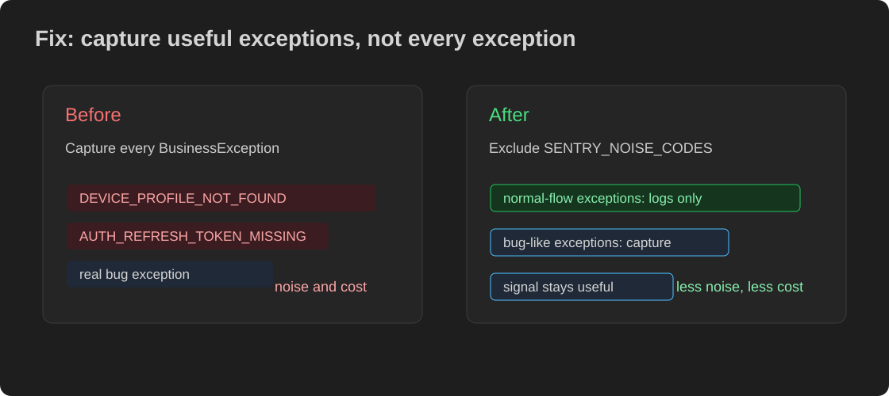

This post is also available on my blog. (한국어 버전은 여기)

We added monitoring and the server died. More precisely, code added to capture errors more clearly increased GC pressure, stalled the JVM, and cascaded into HikariCP pool exhaustion.
This is a short incident note about that chain, and about the three wrong theories we chased before finding the actual trigger.
We decided to send BusinessException events to Sentry. Until then, those domain exceptions were only logged. We wanted to see how often specific error codes happened in production.
The change looked harmless. We added Sentry capture to GlobalExceptionHandler.handleBusinessException:
@ExceptionHandler(BusinessException.class)
public ResponseEntity<ErrorResponse> handleBusinessException(
BusinessException ex, HttpServletRequest request) {
log.warn("BusinessException: code={}, message={}", ex.getCode(), ex.getMessage());
Sentry.withScope(scope -> {
scope.setFingerprint(List.of("business-exception", ex.getCode()));
scope.setTag("error.code", ex.getCode());
Sentry.captureException(ex);
});
return ResponseEntity.status(ex.getStatus())
.body(ErrorResponse.of(ex));
}It was not complicated code. Nothing happened for two days after deployment.
At around 10 p.m., Grafana alerted that the HikariCP connection pool wait queue was climbing fast. Service latency rose, and connection timeout errors followed.

The first suspect was the database. We checked MySQL processlist and ran EXPLAIN. A few queries had suspicious plans.
Result: the service stabilized briefly after restart, then failed the same way again. The bad-looking queries were victims of the cascade, not the cause.
CloudWatch showed CPU rising to 65-98%, but traffic was not unusually high. CPU looked more like a result than a cause.
We checked the last 24 hours of prod deploy commits. One of them added Sentry capture to GlobalExceptionHandler. That connected the dots.
One device screen was polling indefinitely. When the device was not registered on the server, every poll raised DEVICE_PROFILE_NOT_FOUND.
That error code appeared 580+ times in 5 hours. It was 99% of all BusinessException events.
Sentry.withScope(scope -> {
// create Scope
// create Hint
// serialize Exception including stack trace
// enqueue event
Sentry.captureException(ex);
});The Sentry SDK serializes each exception and queues events for a background worker. Looking at the metrics and logs together, the most plausible chain was extra heap allocation from Sentry capture leading to GC pressure.
Sending every normal-flow high-volume exception to Sentry had poor signal-to-cost tradeoff.
We added a noise-code exclusion list to GlobalExceptionHandler:
private static final Set<String> SENTRY_NOISE_CODES = Set.of(
"DEVICE_PROFILE_NOT_FOUND",
"AUTH_REFRESH_TOKEN_MISSING"
);
if (!SENTRY_NOISE_CODES.contains(ex.getCode())) {
Sentry.captureException(ex);
}
We also raised HikariCP pool size from 20 to 30 as a buffer, not the root fix, and enabled GC logging for faster diagnosis next time.
docker logs <container> --since 1h 2>&1 | grep -c 'DEVICE_PROFILE_NOT_FOUND'Sentry is best for real bugs. Normal-flow exceptions can become noise and, in worse cases, performance cost.
git log --since='24 hours ago' --pretty=format:'%h %ci %s' origin/main | head -10